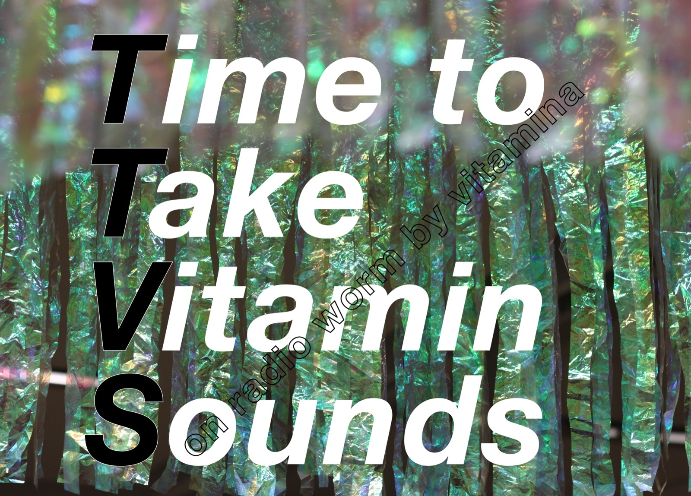

온라인 라디오 스테이션
TTVS spin-off 2026
프로그램 소개
이 프로그램은 김민아(비타미나 Vitamina)가 2022년부터 2023년까지 진행했던 온라인 라디오 쇼 ‘Time to Take Vitamin Sounds (TTVS)’를 바탕으로 한다. 당시 비타미나는 네덜란드 로테르담의 WORM이 제작한 라디오 프로그램에서 격주 진행자로 활동하며, 다양한 한국의 전자음악과 실험음악을 소개했다. 이번에는 Happening(해프닝)에서 라이브 온라인 라디오 쇼를 진행하며, RE#SISTER Korea 멤버들의 사운드 작업을 선보이고 다양한 한국 전자음악과 소리를 소개할 예정이다.
